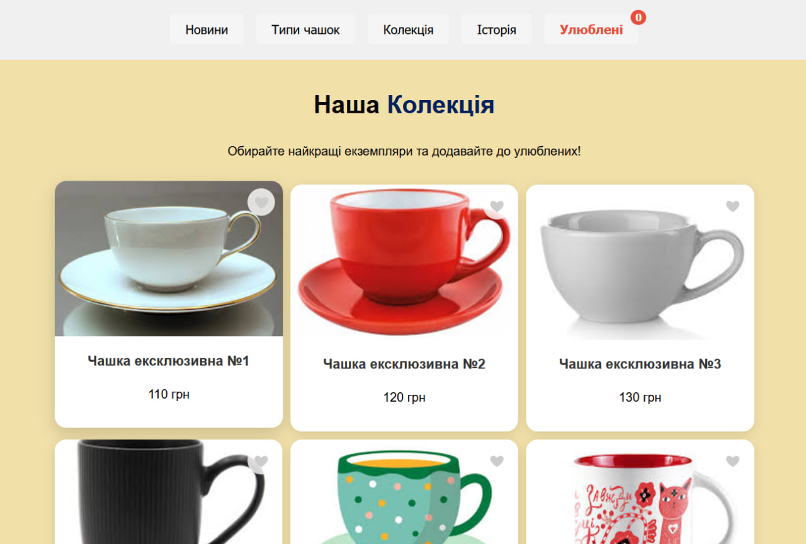
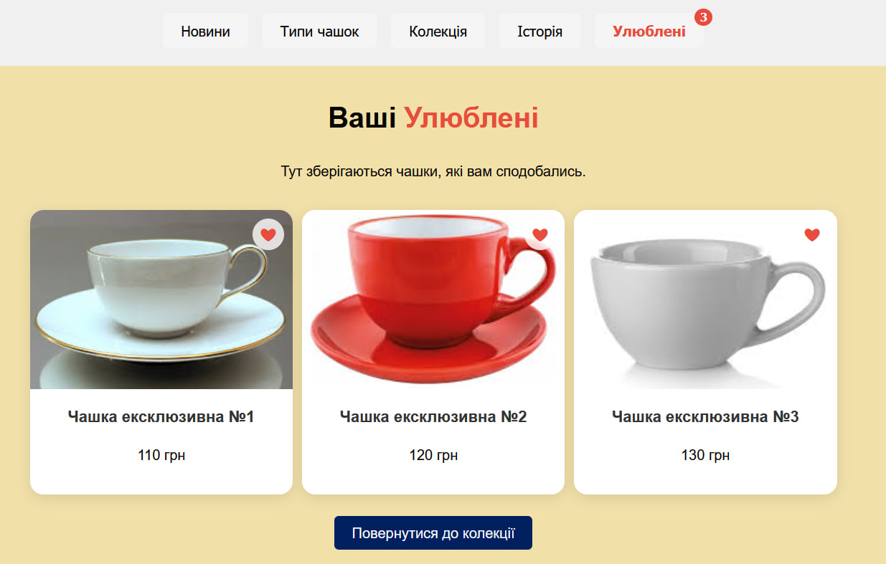

Практична робота №7
Оберіть розділ ліворуч, щоб переглянути вміст.
Тема, Мета, Місце розташування сайту, звіту
Тема: WEB-СХОВИЩЕ. WEB STORAGE API. АСИНХРОННІСТЬ. ПРОМІСИ. ПАГІНАЦІЯ.
Мета: придбати практичні навички роботи створення модального вікна; повторити процес створення макету; закріпити навички роботи з делегуванням подій; придбати практичні навички роботи з WEB STORAGE API та реалізації пагінації.
Посилання на репозиторії:
Посилання на живі сторінки:
ЗАВДАННЯ №1: Реалізація "Улюблених" та Пагінації
Опис виконання:
У власному веб-застосунку "Світ Чашок" було реалізовано наступний функціонал:
- Створено базу даних (масив об'єктів) із 21 товару.
- Реалізовано пагінацію: товари виводяться по 6 штук на сторінці, з можливістю перемикання між сторінками.
- Реалізовано функціонал "Улюблені" за допомогою Web Storage API (localStorage). Користувач може додавати товари до списку улюблених, натискаючи на іконку серця.
- Дані про улюблені товари зберігаються у браузері та не зникають після перезавантаження сторінки.
- Створено окрему сторінку, де відображаються лише ті товари, які користувач додав до улюблених.
- Додано лічильник кількості улюблених товарів у шапці сайту.
Програмний код (scripts.js):
// --- ГЕНЕРАЦІЯ ДАНИХ ТА ПАГІНАЦІЯ ---
const itemsPerPage = 6;
let currentPage = 1;
// Функція рендеру сторінки з пагінацією
function renderCollectionPage() {
const start = (currentPage - 1) * itemsPerPage;
const end = start + itemsPerPage;
const itemsToShow = cupsData.slice(start, end);
// Рендеринг карток...
// Рендеринг кнопок пагінації...
}
// --- LOCAL STORAGE (Улюблені) ---
// Отримати список ID з localStorage
function getFavorites() {
const stored = localStorage.getItem('myFavoriteCups');
return stored ? JSON.parse(stored) : [];
}
// Додавання/Видалення з улюблених
function toggleFavorite(id, btnElement) {
let favs = getFavorites();
if (favs.includes(id)) {
favs = favs.filter(favId => favId !== id); // Видалення
btnElement.classList.remove('active');
} else {
favs.push(id); // Додавання
btnElement.classList.add('active');
}
// Збереження в LocalStorage
localStorage.setItem('myFavoriteCups', JSON.stringify(favs));
updateFavoritesCounter();
}
Результат на сайті:
Скріншот сторінки "Колекція" з пагінацією та активними сердечками
Скріншот сторінки "Улюблені" з обраними товарами
ВИСНОВКИ
Під час виконання практичної роботи №7 я поглибив свої знання JavaScript, зокрема роботу з Web Storage API. Я навчився використовувати localStorage для збереження даних користувача (списку улюблених товарів) між сесіями браузера, що значно покращує досвід користування сайтом.
Також було реалізовано алгоритм пагінації на клієнтській стороні, що дозволило ефективно відображати велику кількість контенту, розбиваючи його на зручні порції. Це завдання допомогло зрозуміти принципи маніпуляції масивами даних та динамічного оновлення DOM-дерева.